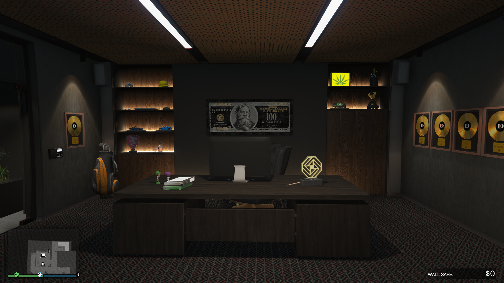

Dados 📋
A Agência (Agency) é uma propriedade de alto nível introduzida na atualização The Contract. É um dos investimentos mais valiosos do jogo, pois oferece missões solo de alto pagamento, um cofre de renda passiva muito estável e acesso a equipamentos cruciais.

Metodo de Obter:
Você pode comprar Agências no Dynasty 8 Executive, que você pode acessar pelo navegador da Internet no seu smartphone. O site pode ser encontrado na aba Dinheiro e Serviços ou inserindo o seguinte URL no seu navegador www.dynasty8executiverealty.com. No total, existem 4 Agências disponível para compra. Eles são:
- Rockford Hills: $ 2,415,000
- Vespucci Canals: $ 2,145,000
- Little Seoul: $ 2,010,000
- Hawick: $ 2,830,000
Melhorias e Personalizações
- Dormintorio: $ 275.000
Você pode adicionar Alojamento por $ 275.000. Seu principal benefício é que permite definir a Agência como um Localização do Spawn no Menu de interação - Oficina de Veículos: $ 800.000
A Oficina de veículos custa $ 800.000 e inclui uma Garagem com espaço para 20 carros. A Oficina de veículos também inclui algumas modificações exclusivas, incluindo a Tecnologia Imani que permite instalar um Bloqueador de bloqueio de mísseis. Este último é particularmente eficaz contra usuarios de Opressor Mk. II - Arsenal: $ 720.000
O Arsenal custa $ 720.000 e vem com uma série de benefícios e vantagens. Permite que você compre Equipamento de assalto como Visão noturna óculos de proteção e Rebreathers. Você também receberá um Armário de armas permitindo que você personalize seu Carregamentos de armas, enquanto você encontrará um novo suprimento gratuito Munição e um Kit de primeiros socorros no balcão.
Funcionamento e Lucro
A Agência gera lucro de três maneiras principais, sendo todas focadas em jogabilidade solo:
1. Lucro Principal: Contratos de Segurança
- Função Principal: Missões solo curtas e rápidas (acessadas pelo computador no escritório).
- Rendimento: Pagamentos rápidos, variando de $ 30.000 a $ 75.000 por missão.
2. Lucro Secundário: O Fim do Contrato (The Contract)
- Série de Missões: Missões da história focadas no Dr. Dre, que culminam em um grande pagamento final.
- Pagamento: $ 1.000.000 na conclusão da série.
- Frequência: Pode ser repetido, mas com missões de pré-requisito longas.
3. Renda Passiva: O Cofre da Agência
- Rendimento: Aumenta ao completar Contratos de Segurança (500 contratos = $ 20.000 diários).
- Gestão: Não requer missões de popularidade; apenas exige a conclusão de missões.
- Lucro Máximo: Acumula $ 20.000 por dia no jogo (48 minutos reais).
A Agência é um bom investimento para jogadores solo. O lucro vem principalmente da repetição rápida dos Contratos de Segurança, enquanto o Cofre oferece uma renda passiva e garantida sem necessidade de reabastecimento ou gerenciamento de popularidade.
Assista a este guia para saber mais sobre. Este vídeo explica como funciona o esquema e como gerenciar.